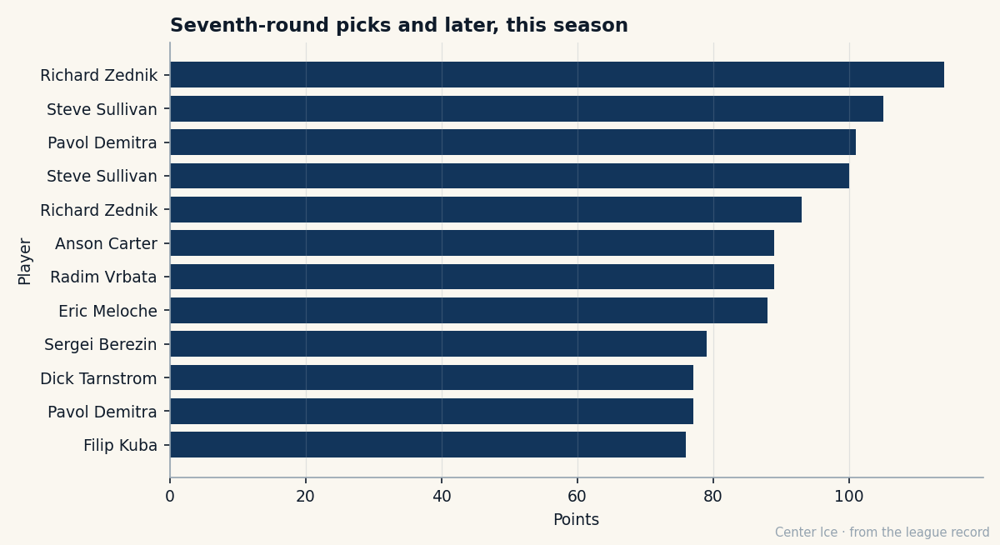

249th Overall, Potential 76, and 47 Points: Richard Zednik Has Passed the Number the Book Gave Him
The Montreal captain was the 249th player chosen in 1994. Twenty-nine years old, he is third in league scoring and the Book says he stopped growing a year ago.
 Carol BinghamFeatures writer · Rinkside
Carol BinghamFeatures writer · Rinkside Richard Zednik81 was the 249th player chosen in the 1994 draft. At 29, he is third in league scoring with 47 points. The Book gave him a potential grade of 76. He is at 81 today.
Richard Zednik81 was the 249th player chosen in the 1994 draft. At 29, he is third in league scoring with 47 points. The Book gave him a potential grade of 76. He is at 81 today.
Potential is the Bureau's estimate of how likely a man is to develop further. At 249th overall, after nine rounds of hockey in front of him, the scouts saw a player who would peak near 76. He passed it in 2003-04, when the record shows 93 points in 62 games. He is passing it again this season, at a pace that would put 113 points on the board if he played a full year.
He grew up in Bystrica, Slovakia, crossed the Atlantic to play junior for the Portland Winter Hawks of the WHL, and scored 35 goals in his rookie year there. The  Washington Capitals took him in round 9 of the 1994 draft, the 249th name called on a Sunday afternoon when nobody in Washington knew how it would turn out. His first full NHL season was 1997-98: 65 games, 17 goals. He made the team out of training camp, scored his first career goal on opening night against Ed Belfour, then was sent down and recalled twice in his first year.
Washington Capitals took him in round 9 of the 1994 draft, the 249th name called on a Sunday afternoon when nobody in Washington knew how it would turn out. His first full NHL season was 1997-98: 65 games, 17 goals. He made the team out of training camp, scored his first career goal on opening night against Ed Belfour, then was sent down and recalled twice in his first year.
A radio station in the District once offered fans a free ticket and a Zednik jersey if they dyed their hair blond to match his. That was October 2000. By March 2001, Washington traded him to Montreal with  Jan Bulis76 and a first-round pick for Trevor Linden and a package that included Dainius Zubrus. Bulis is still his teammate. He has 30 points this season. Zednik has 47.
Jan Bulis76 and a first-round pick for Trevor Linden and a package that included Dainius Zubrus. Bulis is still his teammate. He has 30 points this season. Zednik has 47.

The 25 goals in 34 games this year sit against those 17 in 65 games eight seasons ago. He skates 23.3 minutes a night now, up from 21.6 last season and the 21.9 of whatever year produced those 114 points. The pace number in the standings says 113, which would be 19 more than  Markus Naslund91 is currently tracking toward in Vancouver.
Markus Naslund91 is currently tracking toward in Vancouver.
What one man carries
 Montreal Canadiens has 37 standings points in 34 games. The payroll is $54.89M, which is $1.48M per standings point. The Canadiens have scored 86 goals this season. Zednik scored 25 of them and set up 22 more. The next man on the team is Bulis, his old Washington teammate, with 30 points. Mike Komisarek81 has 29 from the blue line.
Montreal Canadiens has 37 standings points in 34 games. The payroll is $54.89M, which is $1.48M per standings point. The Canadiens have scored 86 goals this season. Zednik scored 25 of them and set up 22 more. The next man on the team is Bulis, his old Washington teammate, with 30 points. Mike Komisarek81 has 29 from the blue line.
 Jose Theodore87, at overall 87, is the best goaltender on the roster. The defense runs through Komisarek and Andrei Markov. The forward group has Zednik at the top and a long drop-off.
Jose Theodore87, at overall 87, is the best goaltender on the roster. The defense runs through Komisarek and Andrei Markov. The forward group has Zednik at the top and a long drop-off.  Michael Nylander77 has 19 points in 21 games before an injury.
Michael Nylander77 has 19 points in 21 games before an injury.  Chad Kilger76 has 10. Nikolai Antropov has 17.
Chad Kilger76 has 10. Nikolai Antropov has 17.
He wears the C. He is on $7.33M with four years left, and Montreal committed real money to a player the Book already said was finished. His morale reads 94.
The Development Index lists him at no movement at all. He is not on the risers and not on the fallers. The Index sees a player performing exactly as the Book's base grade predicts, meaning a 9th-round pick is scoring at a Hart Trophy pace and nobody at the Bureau has updated their projection.
The late-round ceiling
Zednik leads all players drafted in the 7th round or beyond this season by 8 points. Eric Meloche78 of Pittsburgh is second at 39, taken 186th in 1996. Brandon Reid79 is third at 38, taken 208th in 2000.  Martin Erat85 of
Martin Erat85 of  Nashville Predators has 36 from the 7th round.
Nashville Predators has 36 from the 7th round.
Over a career, the comparison gets older.  Steve Sullivan87 of Chicago, drafted 233rd in 1994, once scored 105 points in a season.
Steve Sullivan87 of Chicago, drafted 233rd in 1994, once scored 105 points in a season.  Pavol Demitra78 of
Pavol Demitra78 of  St. Louis Blues, 227th in 1993, has 101 on the sheet for one of his years. Zednik's 114 in the career line sits above both of them, though I cannot say what season produced it. The record carries the line and calls it zero.
St. Louis Blues, 227th in 1993, has 101 on the sheet for one of his years. Zednik's 114 in the career line sits above both of them, though I cannot say what season produced it. The record carries the line and calls it zero.
The number 76
The Book's potential grade means different things at different ages. For a 21-year-old it means the Bureau thinks he has a chance to reach that number. For a 29-year-old already past it, the grade is a relic. Nobody at the Bureau has revised it. Nobody has revised his base grade of 87 either, which sits six points above what his overall reads today and means the Index has him performing below his own historical average even while he scores 47 points in 34 games.
A hip injury kept him off the ice between late January and early March 2005. A first-round pick became someone else's player in Montreal. He is a 9th-round name in a list of 270 men that Washington once drafted and then traded for Trevor Linden.
He is 29 years old, captain of the Montreal Canadiens, third in the league in scoring, and carrying a room that needs every one of those 47 points just to make the playoff bracket.